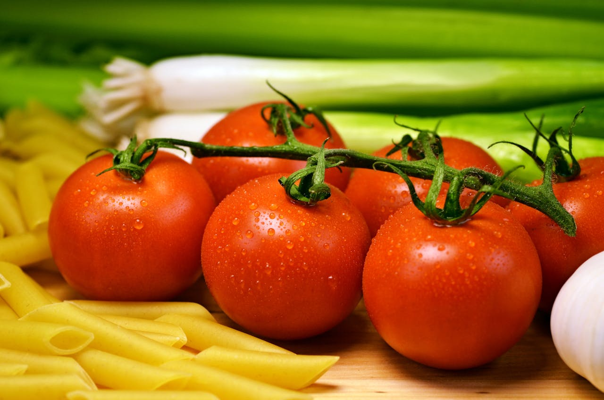

Cucumber
The cucumber is a fascinating vegetable, celebrate for its versatility, crisp texture, and refreshing taste. Belonging to the Cucurbitaceae family,[...]

Tomato
The tomato, a fruit often mistaken for a vegetable, is one of the most widely cultivated and consumed crops in[...]
HEALTHY FOOD
Products
Our greens are tender and delicious, clean and pesticide free, responsibly grown and delivered to grocery stores – by locals just like you!